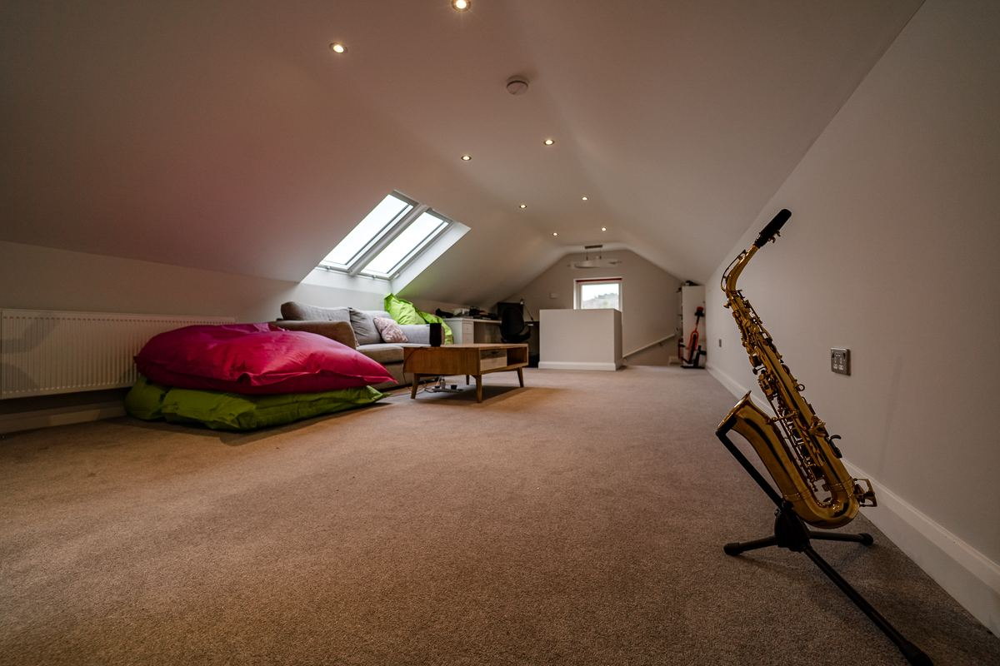
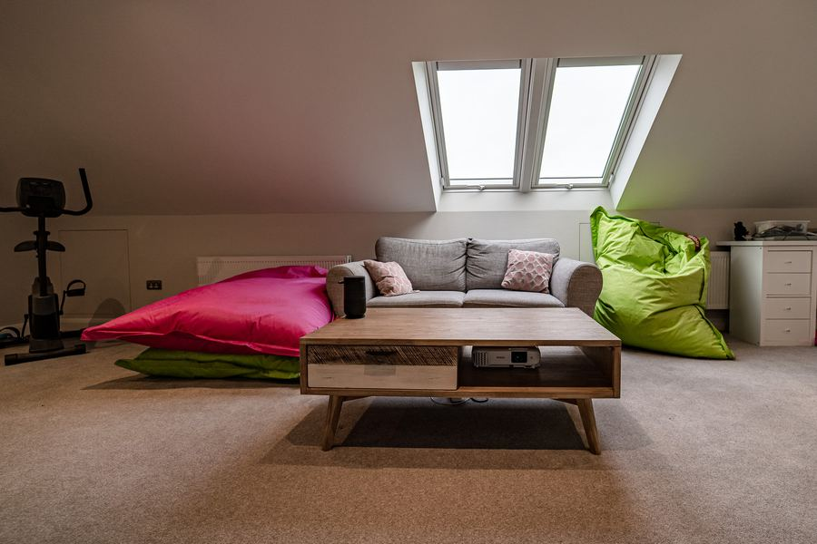
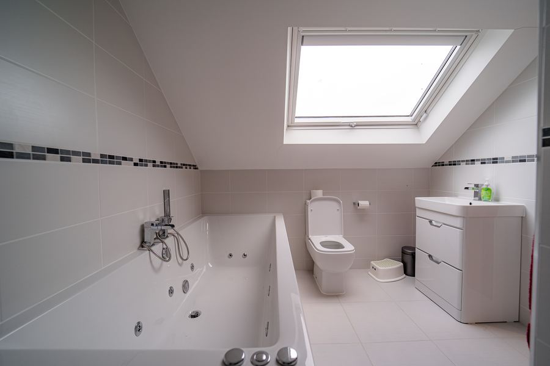
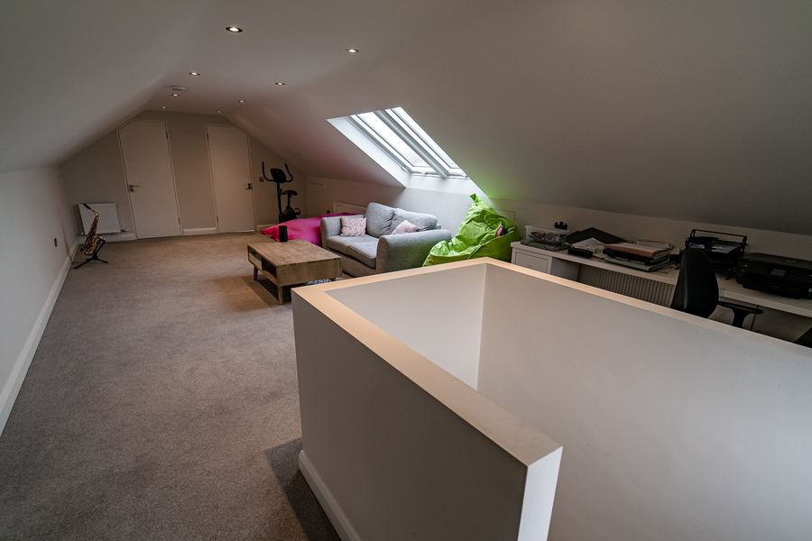
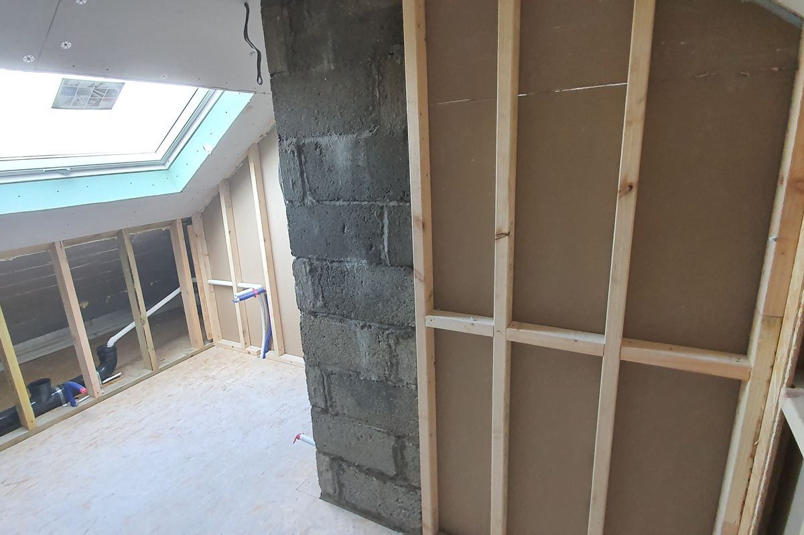

Attic conversion builders in Dublin
An attic conversion adds a full room to the house without giving up any of the garden. Delta Construct converts attics across Dublin, from the steel and floor structure to the stairs, roof windows, insulation and finishes.
We protect the rest of the house before work starts and leave it clean at the end of every day.

What your attic can become

Bedrooms and living rooms
A bright room under roof windows, insulated, wired and finished to the standard of the rest of the house.

En-suite bathrooms
A bathroom in the attic makes the new room self-contained. This en-suite has a bath, a walk-in shower and a roof window.

Attic stairs and landings
A fixed staircase makes the attic part of the house. We form the opening, fit the stairs and finish the landing and balustrade.
What an attic conversion includes
- Steel beams and new floor joists to carry the room
- Stud walls to shape the space
- Insulation to the roof and walls
- Roof windows, or a dormer for more headroom
- Stairs, landing and balustrade
- Bathroom plumbing
- Electrics, lighting and heating
- Plasterboard, skimming, floors and finishes

What clients say about their attics
Delta Construct, was by far the best decision we have made to have our Attic converted. I spoke with several builders and all of them were reluctant on taking our requests/design … We are delighted with our Attic and with the end result. In terms of work they are top of the class.
★★★★★Nuno C.Google review
I had an attic converted to a bedroom, by Dom and his crew. I was absolutely delighted with the result, their attention to detail ensured that the finished room was perfect. They arrived early every day, and tidied up before they left, always courteous and very helpful with advice.
★★★★★Dee C.Google review
Attic conversion questions
Do you need planning permission for an attic conversion?
Since 27 July 2026, a dormer at the back or side of the house does not need planning permission if it is no more than 30 cubic metres, no higher than the top of the roof and at least 20 centimetres from the edge of the roof. Up to two roof lights of 100 by 90 centimetres are allowed on the front of the roof. A dormer on the front of the house needs planning permission.
How much does an attic conversion cost?
The price depends on the structural work, the stairs, the number of roof windows or a dormer, and whether the attic has a bathroom. We visit your home to see the space and talk through what you want, then send a detailed price and plan for the work. Call 089 276 1391 or use the contact form to arrange a visit.
Can an attic conversion be done with other work on the house?
Yes. In Sroughmore, Co. Wicklow, we converted the attic as part of an eight-month project with a glass extension and a renovation.